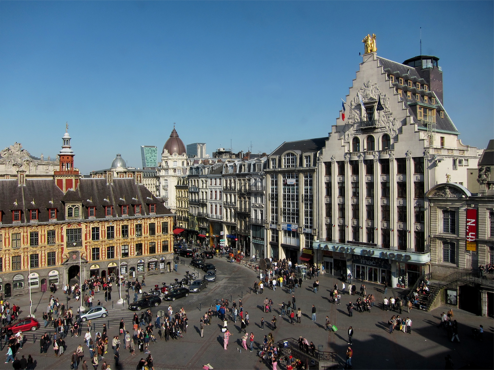

Votre habitat, dans son ensemble
Une installation à rénover, un équipement à entretenir ou un intérieur à organiser ? Nous réunissons plusieurs métiers pour étudier vos besoins et préparer les travaux adaptés à votre logement et à vos usages.
À Lomme et dans la métropole lilloise, nous réunissons quatre savoir-faire pour prendre soin de votre intérieur : électricité, chauffage gaz, plomberie et aménagement intérieur.

Une installation à rénover, un équipement à entretenir ou un intérieur à organiser ? Nous réunissons plusieurs métiers pour étudier vos besoins et préparer les travaux adaptés à votre logement et à vos usages.
Électricité, chauffage gaz, plomberie et aménagement : nous associons quatre savoir-faire pour vos installations neuves, vos travaux de rénovation et vos besoins de dépannage, avec un interlocuteur unique.
Nous étudions votre projet avec des conseils personnalisés et le souci du travail soigné. Particuliers et professionnels, nous vous accompagnons à Lomme et dans la métropole lilloise, pour un ou plusieurs travaux.
Depuis Lomme, nous intervenons dans la métropole lilloise, notamment à Lille, Lambersart, Pérenchies, Haubourdin et Capinghem. Pour préparer un devis gratuit, indiquez votre commune, la nature des travaux et les équipements concernés. Quelques photographies peuvent faciliter notre premier échange. Nous étudions votre demande pour préciser les prestations à prévoir et les informations nécessaires avant une intervention.
